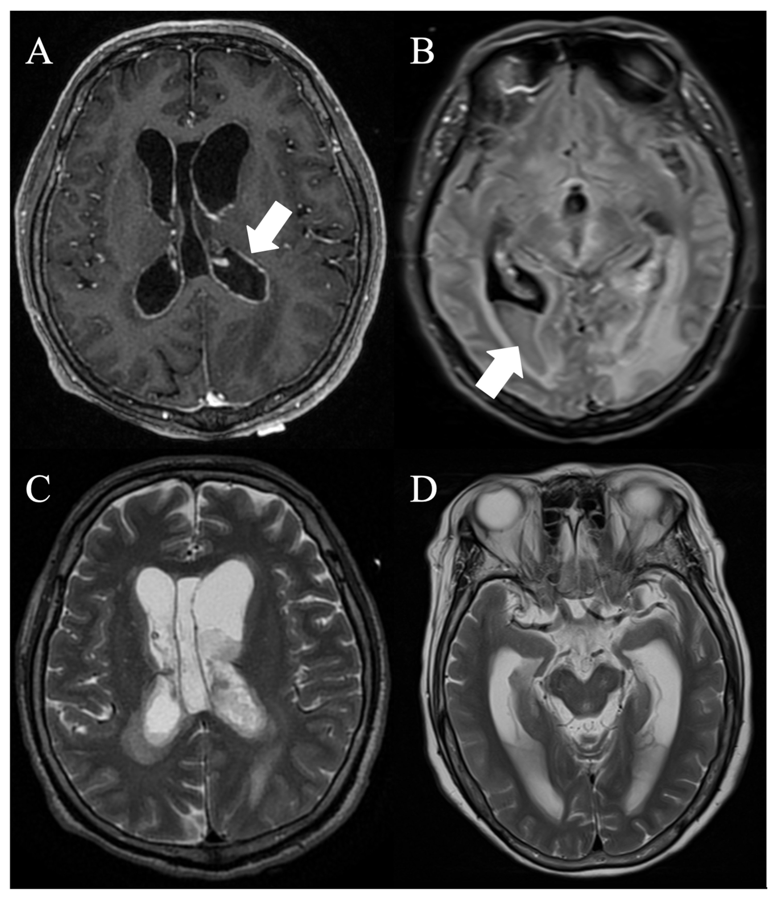
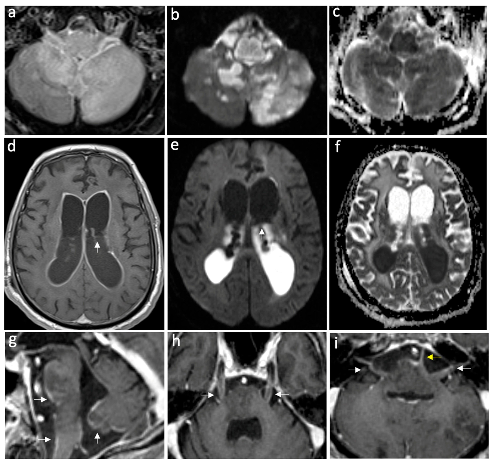
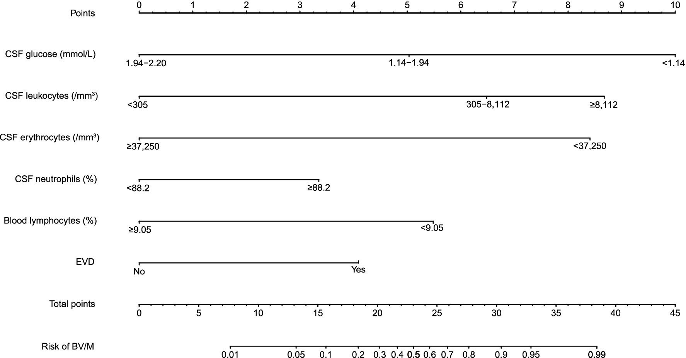

3037 — Nhiễm trùng não thất & nhiễm trùng liên quan EVD: mủ trong não thất, ngấm màng nội tủy, DNT và ngưỡng rút catheter
Tags: pattern:dich-mu-trong-nao-that pattern:ngam-mang-nao-that pattern:han-che-khuếch-tan pattern:gian-nao-that vung:nao-that score:CDC-IDSA score:CSF-cell-index protocol:CT-so-nao protocol:MRI-so-nao protocol:EVD protocol:choc-do-tuy-song
Mức chắc chắn (certainty): tổng hợp y văn (literature synthesis) — ghép meta phân tích 94 nghiên cứu về nhiễm trùng liên quan EVD (PMC13547555), cohort 387 bệnh nhân/421 EVD (PMC12992071), tổng quan hệ thống về lấy DNT thường quy (PMC13615090), nghiên cứu về lượng máu trong SAH/IVH (PMC12819451, nối bài 3034), loạt ca viêm não thất mủ nguyên phát có ảnh MRI (PMC13706012), ca viêm não thất có ảnh DWI/ADC (PMC11417761), nomogram 271 ca (PMC13039033), so sánh dấu ấn DNT với tiêu chuẩn CDC/IDSA (PMC12954234) và tổng quan điều trị 2022 (PMC8896765).
Câu hỏi thực hành: nam 54 tuổi, chảy máu dưới nhện vỡ phình, đặt EVD ngày thứ 6, sốt 38,6 °C, gáy cứng, dịch não tủy (DNT) đục. CT thấy não thất giãn hơn + “vách” tăng tỷ trọng ở sừng chẩm. Câu hỏi: đây là máu cũ, mủ, hay thuốc cản quang? Có phải rút EVD ngay? Kháng sinh bao nhiêu ngày, và có cần chọc DNT mỗi ngày không? Bài chốt theo ba trục: (1) hình ảnh — mủ trong não thất hạn chế khuếch tán (DWI sáng/ADC tối) trong khi DNT tự do thì không, cộng ngấm màng nội tủy và giãn sừng thái dương; (2) xét nghiệm — DNT mới là chốt, không phải hình ảnh: CSF WBC AUC 0,828, tỷ lệ WBC DNT/máu 0,797, glucose DNT/máu 0,768 — còn IL-6/CRP/PCT máu KHÔNG phân biệt được; (3) xử trí — rút/không đổi catheter là biện pháp phòng ngừa mạnh nhất (đổi EVD: HR 3,13), AI-EVD OR 0,43, và không lấy DNT thường quy hằng ngày. Nối 3034 – IVH & EVD, 3012 – Áp-xe ngoài màng cứng sau gây tê, 3014 – Đau đầu sau chọc dò, 214 – Nhiễm trùng hệ thần kinh trung ương, 201 – Protocol sọ não.
1. Tổng quan bệnh học – cơ chế hình ảnh: vì sao mủ trong não thất “tối” trên ADC còn DNT thì không
- Đường vào: (1) ngược dòng theo catheter (EVD, shunt, Ommaya) — màng sinh học (biofilm) trên bề mặt catheter là ổ nhiễm không kháng sinh nào xuyên được; (2) lan từ ổ mủ lân cận (áp-xe não vỡ vào não thất, viêm màng não, viêm xương sọ); (3) rò DNT / vết mổ; (4) nhiễm qua đường máu (hiếm).
- Mô bệnh: viêm màng nội tủy + dịch tiết mủ giàu bạch cầu và fibrin đọng ở phần thấp của não thất (sừng chẩm khi nằm ngửa). Mủ quánh, nhiều tế bào làm giảm chuyển động Brown của nước ngoại bào → DWI sáng, ADC tối. Ngược lại DNT bình thường là nước tự do → DWI tối, ADC rất sáng. Đây là cơ sở vật lý duy nhất để phân biệt “mủ” với “dịch”: cùng nằm trong não thất, khác độ linh động của phân tử nước.
- Vì sao có ngấm màng nội tủy: viêm làm phá vỡ hàng rào máu–DNT tại màng nội tủy → T1 sau tiêm ngấm đều, liên tục theo viền não thất (khác ngấm dạng nốt của u). Đây là dấu hiệu đặc hiệu nhưng không nhạy.
- Vì sao giãn não thất: mảnh mủ/fibrin bít lỗ Monro, cống Sylvius, lỗ Magendie/Luschka và làm tắc hấp thu màng nhện → não úng thủy cấp. Giãn sừng thái dương là dấu hiệu rất nhạy của úng thủy tắc nghẽn cấp, cần dẫn lưu DNT khẩn.
- Vì sao CT dễ bỏ sót: DNT 0–10 HU, mủ chỉ khoảng 15–40 HU — đủ để “hơi tăng tỷ trọng” nhưng dễ bị coi là nhiễu ở lát dày, và máu cấp (50–80 HU) đậm hơn hẳn. Vì vậy CT không loại trừ viêm não thất.
- Ngưỡng định lượng phải nhớ:
- Tần suất nhiễm trùng liên quan EVD (ERI): 8,6% (KTC 95% 7,2–10,3), gộp 94 nghiên cứu; AI-EVD 4,3% vs EVD thường 9,4% vs SI-EVD 10,5%; AI so với thường: OR 0,43 (0,28–0,67); SI so với thường (phân tích độ nhạy): OR 0,58 (0,38–0,88) (PMC13547555).
- Cấy vi khuẩn: Gram dương 65%; Staphylococcus 49,8% (trong đó CoNS 58%), Acinetobacter 7,6%, Klebsiella 7% (PMC13547555).
- Cohort 387 bệnh nhân/421 EVD: nghi ngờ ERI 26,9%, xác định 16,3%; đổi EVD làm tăng nguy cơ: HR 3,13 (2,02–4,85); rò DNT và tắc catheter cũng là yếu tố nguy cơ; kháng sinh toàn thân vì nhiễm khác: HR 0,33 (nghĩa là nhiễm ở nơi khác làm tăng “nghi ngờ” nhưng không phải ERI) (PMC12992071).
- Trong chảy máu dưới nhện (aSAH): EVDAI 14% theo bệnh nhân, 12% theo catheter; BNI độ 4: OR 6,66 (2,04–21,68); mỗi điểm IVH score: OR 1,33 (1,05–1,69); thời điểm khởi phát sớm hơn khi máu nhiều (PMC12819451) — nối 3034.
- Dấu ấn DNT phân biệt được, dấu ấn máu thì không (PMC12954234, 33 ca bệnh/33 ca chứng ghép cặp): CSF WBC AUC 0,828, tỷ lệ WBC DNT/máu 0,797, glucose DNT 0,754, tỷ lệ glucose DNT/máu 0,768; IL-6, CRP, PCT huyết thanh và tỷ lệ/albumin KHÔNG khác biệt.
- Tiêu chuẩn CDC/IDSA “đủ” và “có thể” bắt được ca thật nhưng cũng bắt nhầm: trong số ca được điều trị, 50% đạt định nghĩa xác định và 97% đạt “probable”; nhưng 2,9% ca chứng cũng đạt tiêu chuẩn (PMC12954234).
- Chỉ số tế bào (cell index, CI) ở bệnh nhân có máu trong DNT: cut-off 10,4 → Se 80,5%/Sp 70,5% (PMC8896765).
- Lactate DNT (meta 404 ca sau mổ thần kinh): cut-off 4,41 ± 0,85 mmol/L → Se 92%/Sp 88%; không đặc hiệu với nhồi máu, co giật, chấn thương (PMC8896765).
- Viêm não thất mủ nguyên phát (8 ca): tử vong 1 năm 25%; người sống có WBC DNT trung vị 1.005/µL (508–1.977,5) và protein 1.030 mg/dL (847,5–1.225); người tử vong có WBC 82,5/µL, protein 212,1 mg/dL — tức viêm “nghèo tế bào” ở ca tối nặng là dấu hiệu xấu, không phải “nhẹ” (PMC13706012). Cohort 87 ca khác: tử vong 1 năm 39,1%, 67,3% người sống còn di chứng (trích trong PMC13706012).

A: T1 sau tiêm — ngấm liên tục theo màng nội tủy thất bên (mũi tên): phá vỡ hàng rào máu–DNT. B: FLAIR — mức dịch–mủ ở phần thấp sừng chẩm (mũi tên). C: T2 — não thất giãn + mảnh sùi tín hiệu trung gian đọng phía thấp + phù quanh não thất (thoát dịch qua màng nội tủy). D: T2 ngang trung não — giãn lớn sừng thái dương hai bên = dấu hiệu nhạy của úng thủy tắc nghẽn cấp. Nguồn: J Clin Med 2026 (PMC13706012), CC BY 4.0.2. Mẫu hình + chẩn đoán phân biệt theo vị trí (gamut)
- Mẫu hình cốt lõi: sốt + đau đầu/rối loạn ý thức ở người có EVD/shunt vừa mổ → DNT viêm → hình ảnh: mảnh sùi trong não thất + ngấm màng nội tủy ± giãn não thất.
- Gamut theo “mảnh sùi trong lòng não thất”:
- Mủ (viêm não thất) — DWI sáng/ADC tối, T2 trung gian, mức dịch–mủ, ngấm màng nội tủy.
- Máu trong não thất (IVH) — T2 tối, SWI lan tỏa (blooming), 50–80 HU trên CT, mức hồng cầu lắng; máu cấp cũng hạn chế khuếch tán → DWI một mình không phân biệt được.
- U trong não thất (neurocytoma trung tâm, papilloma đám rối mạch mạc, ependymoma) — khối đặc ngấm thuốc, bám vào vị trí giải phẫu, không mức dịch–mủ.
- Nang keo thất III (colloid cyst) — tròn, ở lỗ Monro, tín hiệu thay đổi theo thành phần, không ngấm màng nội tủy lan tỏa.
- Khí trong não thất (pneumocephalus) — rất tối trên mọi chuỗi xung, không hạn chế khuếch tán, mức khí–dịch nằm trên (không phải dưới).
- Mỡ (vỡ u bì) — T1 sáng, mất tín hiệu khi fat-sat, giọt mỡ nổi trên DNT.
- Nang/ấu trùng (neurocysticercosis dạng não thất) — nang có đầu đốt (scolex), không ngấm màng nội tủy toàn bộ.
- Gamut theo nguyên nhân khi đã chắc có viêm não thất: EVD/shunt (hay nhất) · sau mổ thần kinh · áp-xe não vỡ · viêm màng não do phế cầu/tụ cầu · lao (thường kèm viêm màng não nền) · nấm (Cryptococcus) · nhiễm trùng bẩm sinh (CMV — vôi hóa quanh não thất, không mủ).

Ca viêm màng não–não có viêm não thất (a) FLAIR sau tiêm, (b) DWI, (c) ADC ở tầng cầu: ngấm màng nội tủy + hạn chế khuếch tán dịch trong não thất. (d) FLAIR sau tiêm: giãn não thất + ngấm màng nội tủy (mũi tên). (e) DWI: mảnh sủi sáng rực ở sừng chẩm; (f) ADC: tối tương ứng — chứng minh hạn chế khuếch tán thật, không phải “T2 shine-through”. (g–i) ngấm màng nội tủy sừng thái dương và bể đáy. Nguồn: Neurol Int 2024 (PMC11417761), CC BY 4.0.3. Bảng so sánh phân biệt (ma trận đối chiếu)
| Thực thể (entity) | Hình ảnh điển hình | Chốt vào (rule-in) | Chốt loại (rule-out) | Gợi ý xác nhận |
|---|---|---|---|---|
| Viêm não thất do vi khuẩn (EVD/shunt) | Mảnh sùi DWI sáng/ADC tối đọng phía thấp, ngấm màng nội tủy liên tục, giãn não thất | Có catheter/mổ + sốt + DNT viêm + mảnh sùi hạn chế khuếch tán | Không ngấm màng nội tủy + không mảnh sùi + DNT bình thường → không phải | DNT: cấy + tế bào + glucose, MRI DWI/ADC, cấy đầu catheter |
| Máu trong não thất (IVH) | T2 tối, SWI blooming, CT 50–80 HU, mức hồng cầu lắng; có thể hạn chế khuếch tán ở máu cấp | Bối cảnh chảy máu + SWI dương mạnh + đậm độ CT cao | T2 trung gian + SWI âm + sốt/DNT viêm → mủ | SWI/T2*, CT không cản quang, DNT |
| U trong não thất | Khối đặc, ngấm thuốc, bám vào thành/vị trí điển hình; không mức dịch–mủ | Khối đặc ngấm thuốc đồng nhất + không sốt | Mức dịch–mủ + ngấm màng nội tủy lan tỏa → viêm | MRI + cản quang, mô bệnh học |
| Nang keo thất III | Tròn, ở lỗ Monro, tín hiệu thay đổi, không ngấm | Vị trí lỗ Monro + không ngấm + không sốt | Mủ đọng phía thấp + ngấm màng nội tủy → viêm | MRI T1/T2, CT |
| Khí trong não thất | Tối trên mọi chuỗi, không hạn chế khuếch tán, mức khí ở TRÊN | Tiền sử mổ/chấn thương + mức khí nằm trên | Mức ở DƯỚI + DWI hạn chế → mủ/máu | CT (ngưỡng khí), MRI |
| Nhiễm trùng bẩm sinh (CMV) | Vôi hóa quanh não thất, teo vỏ, không mủ | Vôi hóa quanh não thất + PCR CMV | Mảnh sùi hạn chế khuếch tán + DNT viêm → vi khuẩn | Siêu âm qua thóp, PCR, TORCH |
| Viêm màng nội tủy phản ứng sau mổ (không nhiễm) | Ngấm màng nội tủy nhẹ, mỏng, không mảnh sùi, DNT không viêm | Ngấm nhẹ đơn độc + DNT bình thường + không sốt | Mảnh sùi + DWI hạn chế + DNT viêm → nhiễm thật | So phim cũ, DNT lặp, theo dõi lâm sàng |
Ghi chú đọc ma trận: hai hàng dễ nhầm nhất là mủ vs máu (vì cả hai đều hạn chế khuếch tán) và nhiễm thật vs ngấm phản ứng sau mổ (vì cả hai đều ngấm màng nội tủy). Chốt luôn nằm ở DNT + bối cảnh, không ở một chuỗi xung.
4. Protocol chụp + hệ phân độ/điểm chuẩn hóa
- CT sọ không cản quang — bước 0, luôn làm: vị trí/đầu catheter, giãn não thất, mảnh sùi “hơi tăng tỷ trọng”, mức dịch–mủ, loại trừ chảy máu mới và di lệch đường giữa. CT không loại trừ viêm não thất.
- CT có cản quang (nếu chưa MRI): tìm ngấm màng nội tủy — dấu hiệu đặc hiệu giúp định hướng.
- MRI — bộ tối thiểu: DWI + ADC (bắt buộc), T2/FLAIR, T1 sau tiêm, SWI (loại máu); lát 3–5 mm; so sánh ADC với DNT bình thường cùng lát — mủ tối hơn hẳn.
- DNT — bộ xét nghiệm chuẩn (chốt chẩn đoán): tế bào (có hiệu chỉnh theo hồng cầu → cell index), protein, glucose kèm glucose máu cùng ngày, Gram, cấy, PCR/16S nếu đã dùng kháng sinh.
- Ngưỡng DNT theo CDC/IDSA (dùng trong thực hành): glucose DNT < 50 mg/dL hoặc tỷ lệ glucose DNT/máu < 50%; cộng tăng bạch cầu DNT, tăng protein, cấy dương hoặc hình ảnh/tình huống lâm sàng phù hợp (PMC8896765).
- Nomogram dự báo viêm não thất/viêm màng não sau mổ (271 ca: 150 bệnh/121 chứng) — 6 biến, AUC 0,886 (training) và 0,860 (validation): tỷ lệ lymphocyte máu, WBC DNT (nhóm 305–8.112/µL: OR 9,50; ≥ 8.112/µL: OR 18,68 so với < 305/µL), hồng cầu DNT, tỷ lệ neutrophil DNT, glucose DNT (< 1,14 mmol/L: OR 18,76 so với 1,94–2,20 mmol/L), EVD (PMC13039033).
- Điều trị kháng sinh (theo tổng quan 2022):
- Thời gian: 10–14 ngày với CoNS/C. acnes; tới 21 ngày với S. aureus hoặc trực khuẩn Gram âm; nếu cấy còn dương → 10–14 ngày sau lần cấy dương cuối (PMC8896765).
- Không dùng kháng sinh dự phòng suốt thời gian đặt catheter (tăng đề kháng); một liều trước đặt theo hệ vi khuẩn địa phương.
- Nhiễm catheter = nhiễm màng sinh học → phải rút/đổi catheter; không đổi theo lịch (đổi định kỳ không làm giảm nhiễm, và đổi EVD làm tăng nguy cơ: HR 3,13).
- Kháng sinh trong não thất (intraventricular) chỉ dành cho thất bại điều trị/vi khuẩn khó điều trị, có nguy cơ viêm màng não vô khuẩn và co giật.
- Không lấy DNT thường quy mỗi ngày: 14 nghiên cứu, chỉ 2 nghiên cứu so sánh trực tiếp và không thấy lợi ích; thao tác hệ thống và thời gian lưu catheter quan trọng hơn tần suất lấy mẫu (PMC13615090).
flowchart TD
A[Sốt/rối loạn ý thức ở người có EVD hoặc shunt] --> B[CT sọ không cản quang: vị trí catheter, giãn não thất, mảnh sùi, loại máu mới]
B --> C[DNT: tế bào, protein, glucose + glucose máu, Gram, cấy, PCR]
C --> D{Glucose DNT dưới 50 mg/dL hoặc tỷ lệ dưới 50 phần trăm + tăng bạch cầu?}
D -->|Không| E[Không đủ tiêu chuẩn - theo dõi, tìm ổ nhiễm khác, KHÔNG lấy DNT hằng ngày]
D -->|Có| F[MRI: DWI/ADC, T2/FLAIR, T1 sau tiêm, SWI]
F --> G{Mảnh sùi DWI sáng và ADC tối + ngấm màng nội tủy?}
G -->|Không| H[Nghi ngờ thấp - điều trị theo DNT, chụp lặp 48-72 giờ]
G -->|Có| I[Viêm não thất: kháng sinh toàn thân theo kinh nghiệm]
I --> J{Catheter còn cần thiết?}
J -->|Không| K[Rút catheter + cấy đầu catheter]
J -->|Có| L[Đổi catheter một lần, lấy DNT qua catheter mới]
K --> M[Thời gian: 10-14 ngày CoNS/C. acnes; tới 21 ngày S. aureus hoặc Gram âm; cấy âm 10-14 ngày trước khi ngừng]
L --> M
M --> N[Siêu âm/CT kiểm tra não úng thủy; cân nhắc dẫn lưu nếu sừng thái dương giãn]

*Nomogram gồm 6 biến thường có sẵn: tỷ lệ lymphocyte máu, WBC DNT, hồng cầu DNT, tỷ lệ neutrophil DNT, glucose DNT, EVD; AUC 0,886 (training) / 0,860 (validation). Dùng để chọn ca cần tăng tần suất xét nghiệm TRƯỚC khi có kết quả cấy, không dùng để thay cấy. Nguồn: Front Med 2026 (PMC13039033), CC BY 4.0.*5. Biến thể bình thường và cạm bẫy
- “Máu cũng hạn chế khuếch tán” — cạm bẫy nguy hiểm nhất: máu cấp trong não thất DWI sáng/ADC tối y như mủ. Chốt phân biệt: T2 tối + SWI blooming + 50–80 HU (máu) vs T2 trung gian + mức dịch–mủ + ngấm màng nội tủy + DNT viêm (mủ).
- “T2 shine-through” trên DWI: mọi ổ sáng trên DWI phải đọc kèm ADC; chỉ khi ADC tối mới gọi là hạn chế khuếch tán thật.
- Ngấm màng nội tủy sau mổ/phản ứng với catheter có thể dương tính giả: ngấm mỏng, nhẹ, không mảnh sùi; bệnh nhân không sốt, DNT không viêm. Luôn so phim cũ và đặt cạnh DNT.
- Mảnh sùi “bình thường” sau IVH: một ít máu lắng ở sừng chẩm là bình thường; chỉ khi hạn chế khuếch tán + lâm sàng mới gọi mủ.
- Kháng sinh trước khi lấy DNT làm mất chẩn đoán: 217/326 (66%) ca được dùng kháng sinh trước khi lấy DNT, và việc này làm giảm độ nhạy Gram và cấy (P ≤ 0,004) (PMC6422431). → Lấy DNT TRƯỚC khi đổi kháng sinh nếu an toàn.
- “Viêm nghèo tế bào = nhẹ” là sai: ca tối nặng có thể WBC DNT chỉ 82,5/µL kèm hôn mê sâu và sốc — bạch cầu thấp phản ánh phản ứng miễn dịch cạn, không phải bệnh nhẹ (PMC13706012).
- Tiêu chuẩn CDC/IDSA không phải “vàng ròng”: 2,9% ca chứng vẫn đạt tiêu chuẩn → đừng điều trị chỉ vì “đủ tiêu chuẩn”, phải có bối cảnh + hình ảnh (PMC12954234).
- Đổi EVD theo lịch làm TĂNG nhiễm: HR 3,13 cho đổi EVD; không đổi định kỳ, chỉ đổi khi tắc/không còn cần (PMC12992071).
- Giãn não thất sau khi hết nhiễm vẫn cần theo dõi: hấp thu màng nhện có thể hồi phục chậm → shunt chỉ khi giãn tiến triển + triệu chứng, không đặt shunt “cho chắc” trong lúc còn viêm (nối 3034).
- Nhiễm ở nơi khác làm nhiễu chẩn đoán: kháng sinh toàn thân vì ổ nhiễm khác cho HR 0,33 — tức nhóm này ít bị ERI thật hơn nhưng bị nghi ngờ nhiều hơn (PMC12992071).
6. Tự lượng giá — Blind Quiz ngay trên trang tĩnh
Ca 1 — Nam 44 tuổi, sốt và rối loạn ý thức ngày 3 sau mổ; MRI sọ có cản quang. Nhìn 4 ô trước.
- Gợi ý lâm sàng: DNT đục, glucose DNT thấp; chưa có kết quả cấy.
- Câu hỏi: dấu hiệu nào nói “đang viêm” chứ không phải “di chứng”? ô B và C khác nhau ở đâu? ô D cảnh báo điều gì?
Bấm để hiện đáp án (findings + chẩn đoán)
- A: ngấm màng nội tủy liên tục (mũi tên) — phá vỡ hàng rào máu–DNT, dấu hiệu của viêm đang hoạt động; di chứng xơ hóa không ngấm kiểu này.
- B (FLAIR): mức dịch–mủ ở sừng chẩm; C (T2): mảnh sùi tín hiệu trung gian + phù quanh não thất (thoát dịch qua màng nội tủy).
- D: giãn sừng thái dương hai bên — úng thủy tắc nghẽn cấp, cần dẫn lưu DNT, không chờ.
- Chẩn đoán: viêm não thất mủ — mủ đọng phía thấp + viêm màng nội tủy; chốt bằng DNT.
- Nguồn ảnh: J Clin Med 2026 (PMC13706012), CC BY 4.0.
Ca 2 — Nữ 35 tuổi, viêm màng não–não; DWI và ADC cùng lát. Vì sao phải xem ADC?
- Câu hỏi: ổ sáng ở sừng chẩm trên DWI là mủ, máu hay “T2 shine-through”? ADC trả lời thế nào? còn dấu hiệu nào khác của viêm?
Bấm để hiện đáp án
- e (DWI): mảnh sủi sáng rực ở sừng chẩm; f (ADC): tối tương ứng → hạn chế khuếch tán thật (mủ quánh, nhiều tế bào), không phải T2 shine-through.
- Dấu hiệu kèm: ngấm màng nội tủy (a, d, g–i), giãn não thất, phù quanh não thất.
- Phân biệt với máu: máu cấp cũng hạn chế khuếch tán nhưng T2 tối + SWI blooming + 50–80 HU.
- Nguồn ảnh: Neurol Int 2024 (PMC11417761), CC BY 4.0.
Ca 3 — Bệnh nhân hôn mê sau mổ, DNT có 120 bạch cầu/µL. Nhìn nomogram: có nên tăng tần suất xét nghiệm?
- Câu hỏi: 6 biến là gì? AUC bao nhiêu? nomogram dùng để làm gì và KHÔNG dùng để làm gì?
Bấm để hiện đáp án
- 6 biến: tỷ lệ lymphocyte máu, WBC DNT, hồng cầu DNT, tỷ lệ neutrophil DNT, glucose DNT, EVD.
- AUC 0,886 (training) / 0,860 (validation), 271 ca (150 bệnh/121 chứng), Hosmer–Lemeshow p = 0,471.
- Dùng để chọn ca cần tăng tần suất xét nghiệm TRƯỚC khi có cấy và không trì hoãn kháng sinh ở nhóm nguy cơ cao; KHÔNG dùng thay cấy/DNT và không dùng để ngừng kháng sinh.
- Nguồn ảnh: Front Med 2026 (PMC13039033), CC BY 4.0.
Bài liên quan chéo
- 3034 – Chảy máu não thất & não úng thủy sau xuất huyết: Graeb, CLEAR III, EVD, shunt
- 3012 – Áp-xe ngoài màng cứng sau gây tê/gây mê ngoài màng cứng
- 3014 – Đau đầu sau chọc dò tủy sống: blood patch, biến chứng nội sọ
- 214 – Nhiễm trùng hệ thần kinh trung ương
- 3036 – Trạng thái myoclonus & động kinh sau ngừng tim
- 201 – Protocol sọ não
Ảnh
3037_viem-nao-that_MRI_PMC13706012-G2.jpg— J Clin Med 2026, CC BY 4.0, chuyển từ webp gốc sang JPEG, không crop.3037_viem-nao-that_DWI-ADC_PMC11417761-G2.jpg— Neurol Int 2024, CC BY 4.0, chuyển PNG → JPEG, không crop.3037_viem-nao-that_nomogram_PMC13039033-G2.jpg— Front Med 2026, CC BY 4.0, nguyên bản.- Nguồn + giấy phép từng ảnh:
images/CREDITS.md.
Không dùng để chẩn đoán độc lập khi chưa có người hướng dẫn.